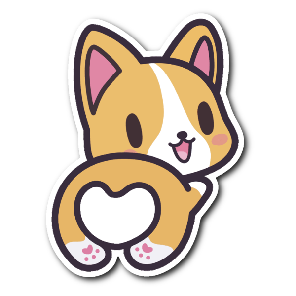

{% load static %}

<!DOCTYPE html>
<html>
  
<head>
  <meta http-equiv="Content-Type" content="text/html; charset=utf-8">
  <title>Join Drawing Channel</title>

  <link rel="stylesheet" type="text/css" href="{% static 'draw/vendor/bootstrap/css/bootstrap.min.css' %}">
  <script type="text/javascript" src="{% static 'draw/vendor/jquery/jquery-3.3.1.min.js' %}"></script>
  <script type="text/javascript" src="{% static 'draw/vendor/paper/paper-full.min.js' %}"></script>
<!--   Did I do this right OG there was no draw/vendor... it was just vendor/... -->
  <script src="{% static 'draw/vendor/hammer/hammer.min.js' %}"></script>
	<script src="{% static 'draw/vendor/hammer/jquery.hammer.js' %}"></script>

  <style type="text/css">
    
    body {
      position: relative;
      width: 1440px;
      height: 900px;

      background: #C5FDCE;
    }
    #color-palette {
      width: 35px;
      background-color: #f1f1f1;
      position: absolute;
      top: 100px;
      left: 163px;
    }
    .swatch {
      width: 30px;
      height: 24px;
      -moz-border-radius: 12px;
      -webkit-border-radius: 12px;
      border-radius: 12px;
      margin: 3px;
    }
    #myCanvas {
      top: 0px;
      padding-left: 0;
      padding-right: 0;
      margin-left: auto;
      margin-right: auto;
      display: block;
      background-color: #FFFFFF;
      border-color: #FFCBCB;
      width: 1000px;
      height: 600px;
    }
    .save_button {
      top: 0;
      left: 0;
      background-color: #F5F5F5;
      position: absolute;
      padding: 10px;
      border-radius: 25px;
      margin: 10px 10px;
    }

    .button-container {
      display: flex;
      flex-direction: row;
      /*flex-wrap: wrap-reverse;*/
      justify-content: left;
      /*align-items: flex-start;*/
      align-content: flex-start;
    }

    .reset_button {
      top:80;
      left: 75px;
      background-color: #F5F5F5;
      position: absolute;
      padding: 10px;
      border-radius: 25px;
      margin: 10px 10px;
    }
    .hide_show_button {
      top: 200px;
      left: 0px;
      background-color: #F5F5F5;
      position: absolute;
      padding: 10px;
      border-radius: 25px;
      margin: 10px 10px;
    }
    .white_button {
      width: 40px;
      background-color: #F5F5F5;
      display: flex;
      flex-wrap: wrap;
      position: absolute;
      float: left;
      top: 0;
      left: 150px;
      border-radius: 25px;
      margin: 13px 10px;
    } 
    
    #myForm {
      top: 0;
      right: 0;
      position: absolute;
    }
    
/*     Code for chatbox taken from: <https://www.w3schools.com/howto/howto_js_popup_chat.asp> */
    .open-button {
      background-color: #555;
      color: white;
      padding: 16px 20px;
      border: none;
      cursor: pointer;
      opacity: 0.8;
      position: fixed;
      bottom: 23px;
      right: 28px;
      width: 280px;
    }
    /* The popup chat - hidden by default */
    .chat-popup {
      display: none;
      position: fixed;
      bottom: 0;
      right: 15px;
      border: 3px solid #f1f1f1;
      z-index: 9;
    }
    /* Add styles to the form container */
    .form-container {
      max-width: 300px;
      padding: 10px;
      background-color: white;
    }
    /* Full-width textarea */
    .form-container textarea {
      width: 100%;
      padding: 15px;
      margin: 5px 0 22px 0;
      border: none;
      background: #f1f1f1;
      resize: none;
      min-height: 200px;
    }
    /* When the textarea gets focus, do something */
    .form-container textarea:focus {
      background-color: #ddd;
      outline: none;
    }
    /* Set a style for the submit/send button */
    .form-container .btn {
      background-color: #4CAF50;
      color: white;
      padding: 16px 20px;
      border: none;
      cursor: pointer;
      width: 100%;
      margin-bottom:10px;
      opacity: 0.8;
    }
    /* Add a red background color to the cancel button */
    .form-container .cancel {
      background-color: red;
    }
    /* Add some hover effects to buttons */
    .form-container .btn:hover, .open-button:hover {
      opacity: 1;
    }

    .home {
      
    }
    
    </style>

</head>
  
<body>
  
  <!-- You may change the dimensions of this canvas -->

  <div class="button-container">
    
    <canvas id="myCanvas"></canvas>
    <div id="color-palette"></div>
    <button class="white_button"> </button>
    <button class="save_button">Save</button>
    <button class="reset_button">Reset</button>
    <button class="hide_show_button">Hide/Show</button>
  </div>

     
    

  <button class="open-button" onclick="openForm()">Chat</button>
  <div class="chat-popup" id="myForm">
    <form action="/action_page.php" class="form-container">
      <h1>Chat</h1>
      <label for="msg"><b>Message</b></label>
      <textarea placeholder="Type message.." name="msg" required></textarea>
      <button type="submit" class="btn">Send</button>
      <button type="button" class="btn cancel" onclick="closeForm()">Close</button>
    </form>
  </div>
  
</body>
  
<script type="text/javascript" canvas="canvas">

  function openForm() {
    document.getElementById("myForm").style.display = "block";
  }

  function closeForm() {
    document.getElementById("myForm").style.display = "none";
  }

  function getRandomColor() {
    var letters = '0123456789ABCDEF';
    var color = '#';
    
    for (var i = 0; i < 6; i++) {
      color += letters[Math.floor(Math.random() * 16)];
    }
    
    return color;
  }

  var canvas = document.getElementById('myCanvas');
  paper.setup(canvas);

  var cp = {
    history: ["#000000"], 
    options: [],
    $container: $('#color-palette')
  }

  var tool = new paper.Tool();
  var url = window.location.href;
  var users = {};
  var userID = Math.random(); 
  var color = cp.history[cp.history.length-1];
  var path;

  var socket = new WebSocket('ws://' + window.location.host + '/ws/draw/');

  tool.onMouseDown = function(event) {
      path = new paper.Path();
      path.add(event.point);
      path.strokeColor = color;
  }

  tool.onMouseDrag = function(event) {
    path.add(event.point);
  }

  tool.onMouseUp = function(event){
    var message = JSON.stringify({pathData: path.pathData, color: color, user: userID, url: url});
    socket.send(message);
  }
  
  socket.onmessage = function(receivedMessage) {
    var data = JSON.parse(receivedMessage.data);
    path = new paper.Path(data.pathData);
    path.strokeColor = data.color;
  };   

  window.onload = function() {
    function createColorPalette(colors) {
      for (var i = colors.length - 1; i >= 0; i--) {
        var $swatch = $("<div>").css("background-color", colors[i]).addClass("swatch");
        $swatch.click(function(){
          cp.history.push($(this).css("background-color"));
        });
        cp.$container.append($swatch);
      }
    }

    function getColorsCreatePalette() {
      cp.$container.html(" ");
      $.getJSON('/static/draw/vendor/material/material-colors.json', function(colors){
        var keys = Object.keys(colors);
        for (var i = keys.length - 1; i >= 0; i--) {
          cp.options.push(colors[keys[i]][500]);
        }
        createColorPalette(cp.options);
      });
    }

    function createEraser() {
      var $swatch = $("<div>").css("background-color", "white").addClass("swatch");
      $swatch.click(function(){
        cp.history.push($(this).css("background-color"));
      }); 
      $(".white_button").append($swatch);
    } 

    $("#color-palette").on("click", '.swatch', function() {
      color = cp.history[cp.history.length-1];
    });

    getColorsCreatePalette();
    createEraser();

    let $saveButton = $(".save_button");
    $saveButton.on('click', () => {
      window.print();
      return false;
    })

    let $resetButton = $(".reset_button");
    $resetButton.on('click', () => {
      location.reload();
    })

    let $toggleButton = $(".hide_show_button");
    let $colorPalette = $("#color-palette")
    $toggleButton.on('click', () => {
      $colorPalette.toggle();
    })
  }
  
</script>
  
  
</html>
